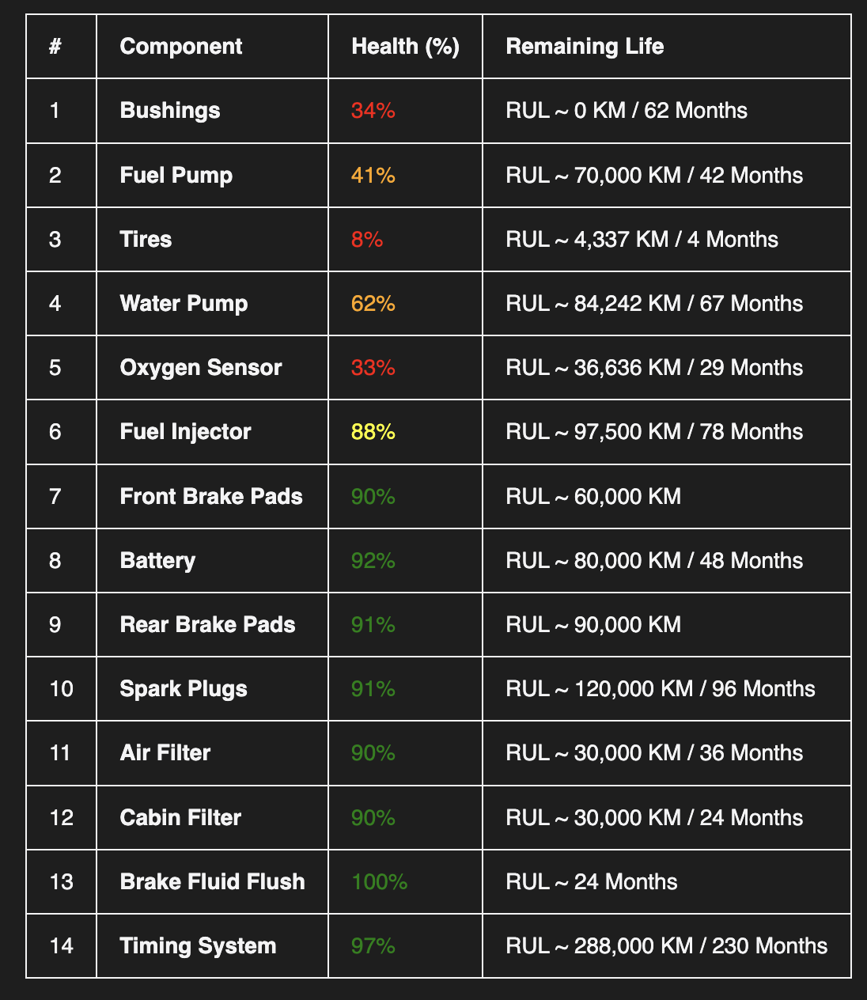

Replacing physical sensors with engineering logic. Generate Health% and RUL reports based on vehicle configuration and UAE operational cycles.

Calculated Health% for a 1GR-FE engine profile in UAE Highway cycles.
| Input Parameter | AI Analysis Logic |
|---|---|
| Engine Code (e.g. 1GR-FE) | Applies specific thermal efficiency & timing wear curves. |
| Km & Vehicle Age | Calculates fatigue cycles vs. "Designed Life" limits. |
| Drivetrain (AWD/FWD) | Adjusts brake bias & differential wear coefficients. |
| Driving Area (City/Hwy) | Weightage for stop-go heat soak vs. highway cooling. |
| Replacement History | Resets specific component wear-clocks in the digital twin. |
| OUTPUT REPORT | Health% + RUL (Remaining Useful Life) |
Adjusts "Designed Life" for high-ambient temperatures, specifically targeting 12V battery and rubber degradation rates.
Perfect for remote fleet audits where OBD-II access is unavailable. Uses pure metadata to forecast maintenance needs.
Specific bias logic for AWD/FWD/RWD systems ensures accurate pad wear predictions across different vehicle types.